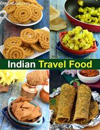

Add adescription of the image here
1 . we add uttuce
2 . we add beetroot
3 . we add cupsiceem
4 . we add cucumber
5 . we add tomato
6 . we add spinach
7 . we add red onion

The preparation of papad consists of dough making using pulse flour (preferably urad dhal), salt, carbonates, farinaceous material and water. The dough is kneaded made into small balls and pressed into 1 mm thickness using the above papad press. The pressed circular shaped papad is dried to 14-15% moisture level.
A roll is a small, usually round or oblong individual loaf of bread served as a meal accompaniment (eaten plain or with butter). Rolls can be served and eaten whole or are also commonly cut and filled – the result of doing so is considered a sandwich in American English and in Britain.
According to HealthifyMe, world s first Indian nutrition tracker, a single piece of jalebi (25g) contains as much as 88.8 calories.22-May-2015Add adescription of the image here
Recipes provide consistency in the production of menu items. Recipes provide food cost control. Recipes provide knowledge for front of the house staff as a sales tool and to help consumers with dietary concerns and allergies.